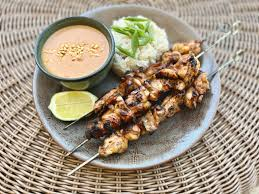

Delicious chicken satay made with marinated chicken in a peanut sauce, then grilled for a crowd-pleasing appetizer. Why go out for Indonesian food when you can make it at home?
To make the marinade: Combine peanut butter, soy sauce, lime juice, brown sugar, curry powder, garlic, and hot pepper sauce in a mixing bowl. Add chicken breasts, toss to coat, cover, and refrigerate for 2 to 4 hours.
Preheat an outdoor grill to high heat; lightly oil the grate.
Remove chicken from marinade and shake off excess. Thread marinated chicken onto skewers; discard remaining marinade.
Cook on the preheated grill until chicken is cooked through and no longer pink inside, about 5 minutes per side.